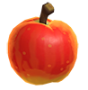
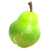

Animal Crossing

Animal Crossing is a social simulation video game series developed and published by Nintendo and created by Katsuya Eguchi. In Animal Crossing, the player character is a human who lives in a village inhabited by various anthropomorphic animals, carrying out various activities such as fishing, bug catching, and fossil hunting. The series is notable for its open-ended gameplay and extensive use of the video game console's internal clock and calendar to simulate real passage of time.
